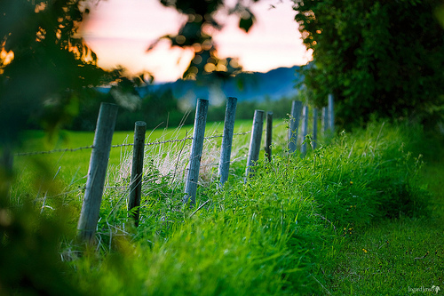
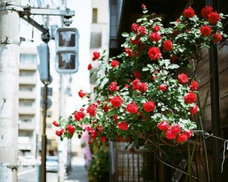
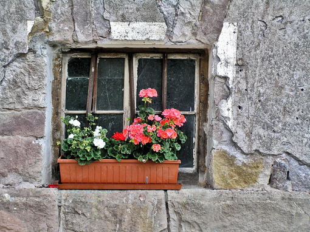
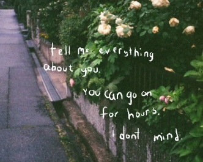
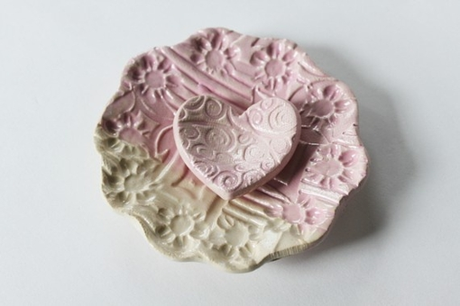

-

《孤独的林荫》
我的心，是一片荒芜。居住着一个没有领土的国王，安静的时候，羸弱的风一同呼吸着，瘦小的鸦一同陪伴着。他苍老的脸上，没有失落，也没有忧愁。像一个经历沧桑的老树一般屹立。
-
它的名字叫大海
莫非/于壹叁年十贰月十肆日每个人，将相同。都有一个家，无边无际。且，他不爱你，你不爱他。天将降大雨，阴冷冷灰霾霾，苍茫如你，黑影交加。我提灯而行，你款款而来。灰白苍穹，如你五彩的脸。染
-

岁月静好
岁月静好回顾往事的一幕幕,生命好像一场漫长的电影,只是不停的更换主角.夜,很静,月,很冷。以前的我总是好胜，喜欢去争取那些不属于我或者说不会长久的属于我的东西，付出很多努力，很多精力，最后也只
-

纯粹的东西
如果在山顶，我可以清楚地看到那璀璨的黑夜是如何对着成蓝到透明发亮的白昼，清晰的感觉到太阳从西半球的那一端渐渐将光芒扑向子午线外的东半球，如同那泛黄的日历，翻开了新的一页。但我在市区
-
人在囧途
前些日子回家，恰巧碰上了暴风雪。下午在火车站附近的肯德基吃些东西消磨时间，对面坐过来一个女孩，笑着同我打招呼，聊着聊着才知道是同校的学妹，她说她来接站，从下午四点一直等到现在，她说马路上的公
-

中文VS英文
同样站在超市门口拍一张照，若背景是“超市”两个大字，一定觉得十分城乡结合部，气质瞬间屌丝了是不是？若背景是“supermarket”，是不是立马觉得高端了？人也洋气了？中文，只要不是文盲，所
-

60后母亲
90后的我们，母亲大多是60后。60后的母亲是伟大的，艰辛的，90初的我们，出生在浩浩荡荡的计划生育大扫荡中。那一天，和伙伴们讨论关于出生的那点事。A说，我妈自己骑自行车去的医
-
送礼初体验
一件事情，如果不做并不会给自己造成大碍，做了也不会给自己带来多大的好处。但是心里明白，从礼节上、道义上、人情上、哪怕是为了表现一下自己愉悦一下别人，这件事还是应该做的。那，就不要含糊，果断地去做吧